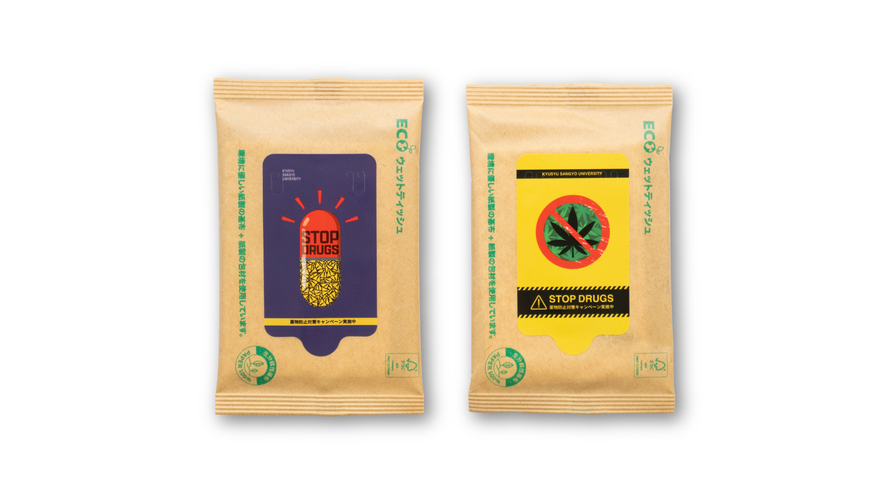

STOP DRAGS
薬物防止対策キャンペーン除菌シート
#GraphicDesign #PackageDesign
概要
大学からの依頼で、薬物防止対策キャンペーンの一環で配布される除菌シートのパッケージをデザインしました。 ターゲット層が学生であるため、若者に受け取ってもらいやすいようポップな印象を与えつつ、薬物の恐ろしさも伝えることを意識しています。
デザインA
サイレンと薬のカプセルを組み合わせたモチーフの内部に注意マークを詰め込むことで、明るくポップな印象の中にも薬物の危険性を表現しました。学生が気軽に手に取れるよう意識しつつ、親しみやすさの裏に潜む恐ろしさを表現しています。
デザインB
大麻草のシルエットを大きく配置し、その背景にも大量の大麻草を配置することで、薬物に溺れていく様子や依存の恐怖、深刻さを表現しました。全体は赤と黄の警戒色でまとめ、薬物の危険性を直感的かつ瞬時に伝える強いビジュアルに仕上げています。